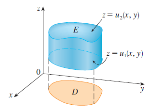

PARTE 3 · AULAS 39–43
Integrais triplas e mudança de variáveis
Volumes, massas, coordenadas cilíndricas e esféricas e o papel do Jacobiano.
1. Integral tripla
\[\iiint_E f(x,y,z)\,dV.\]
Para \(f=1\), obtemos o volume; para \(f=\rho\), a massa.

2. Descrição iterada
\[u_1(x,y)\leq z\leq u_2(x,y).\]
\[\iiint_Ef\,dV=\iint_D\left[\int_{u_1}^{u_2}f\,dz\right]dA.\]
Exemplo resolvido.
Na caixa \(0\leq x\leq1\), \(0\leq y\leq2\), \(0\leq z\leq3\),
\[V=\int_0^1\int_0^2\int_0^3 1\,dz\,dy\,dx=6.\]
3. Cilíndricas
\[x=r\cos\theta.\]
\[y=r\sin\theta.\]
\[dV=r\,dz\,dr\,d\theta.\]

4. Esféricas
\[x=\rho\sin\phi\cos\theta.\]
\[y=\rho\sin\phi\sin\theta.\]
\[z=\rho\cos\phi.\]
\[dV=\rho^2\sin\phi\,d\rho\,d\phi\,d\theta.\]

5. Jacobiano
O Jacobiano mede o fator local de deformação da mudança de coordenadas.
\[dA=\left|\frac{\partial(x,y)}{\partial(u,v)}\right|du\,dv.\]
Visualização no GeoGebra 3D
Abrir GeoGebra 3D ↗Abra o ambiente 3D para explorar geometricamente os objetos relacionados a este conteúdo.
Material organizado a partir das aulas da GCT054 e da bibliografia indicada no Plano de Ensino, especialmente Stewart (2014), Anton, Bivens e Davis (2014) e Thomas, Weir e Hass (2013).